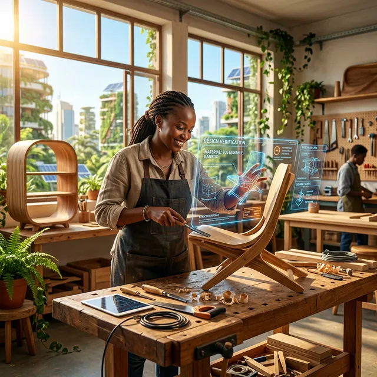

- Nairobi, Kenya. Jeudi 22 mars 2034. 6h47 du matin. -
Le soleil se lève sur les collines de Kikuyu avant même que Wanjiru n'ait ouvert les yeux. À 34 ans, elle commence chaque journée avec ce rituel : dix minutes les paupières closes, à écouter le quartier s'éveiller. Les voix des voisins. Les coqs. La fontaine automatique qui s'enclenche à 6h45, gérée par l'algorithme de distribution d'eau de la commune, un système développé il y a quatre ans par la coopérative numérique locale, alimenté par des données de pluviométrie et par les retours quotidiens de chaque foyer.
Wanjiru est menuisière. Ou plus exactement, elle corrige toujours les journalistes qui l'appellent ainsi, elle est designer de mobilier et cheffe d'atelier augmentée.
Ses mains connaissent le bois depuis l'enfance. Aujourd'hui, elles travaillent en dialogue constant avec KARIMI, son agent de conception IA, nommé d'après une architecte kenyane du XXe siècle, qui modélise en temps réel les contraintes structurelles, optimise les découpes pour minimiser les pertes de matière, et génère des variantes de design à partir des inspirations que Wanjiru lui soumet chaque matin, griffonnées dans son carnet.
Elle travaille dix-neuf heures par semaine. Elle gagne trois fois ce que gagnait son père, ingénieur dans une entreprise de travaux publics qui lui réclamait soixante heures. Elle est copropriétaire, avec les 47 autres membres de sa coopérative, d'un nœud d'IA régional, une infrastructure partagée dont les serveurs tournent à l'énergie solaire sur le toit d'un ancien entrepôt de Westlands. Les dividendes de ce nœud, proportionnels aux requêtes traitées pour les entreprises extérieures, lui ont permis, l'an dernier, d'envoyer sa fille étudier l'astrophysique à l'Université de Nairobi.
Ce matin, elle a deux heures de conception à finaliser pour un client à Amsterdam, une bibliothèque en chêne massif qui intègre des panneaux acoustiques en fibre de bambou. KARIMI a déjà calculé les jointures, vérifié la résistance aux variations d'humidité de l'air néerlandais, et proposé trois variantes d'assemblage. Wanjiru choisira. Wanjiru tranchera. Wanjiru signera l'œuvre.
C'est cela, la liberté de 2034. Non pas l'absence de contraintes. Mais la liberté de consacrer son énergie à ce qui compte, à la décision, à l'intuition, à la création, plutôt qu'à la répétition mécanique qui épuisait et infantilisait. Non pas la passivité de Marc à Lyon, mais l'agentivité retrouvée de Wanjiru à Nairobi.
La différence entre ces deux futurs ne réside pas dans la technologie. Elle réside dans les choix que l'humanité a faits entre 2025 et 2030.
Voici comment.
"Chaque fois dans l'histoire qu'une technologie s'est démocratisée, l'imprimerie, l'électricité, Internet, les sociétés qui ont choisi l'accès universel ont surpassé celles qui ont choisi la rente."
- Synthèse des travaux de Mariana Mazzucato sur l'innovation publique
Dans le scénario de la Renaissance, tout a commencé par une prise de conscience collective dont les historiens, avec le recul de 2034, identifient l'émergence entre 2025 et 2026. Non pas une révolution. Pas un événement singulier. Une accumulation de prises de conscience qui, soudainement, ont atteint une masse critique.
Les travailleurs du savoir ont commencé à comprendre ce que leur réservait le scénario par défaut. Des études documentant la concentration accélérée du capital IA ont circulé au-delà des cercles académiques. Des scandales de manipulation algorithmique, similaires aux révélations de Cambridge Analytica, mais d'une échelle bien supérieure, ont ébranlé la confiance dans les grandes plateformes. Et des gouvernements pionniers, l'Estonie, la Finlande, puis le Parlement européen réformé de 2026, ont commencé à légiférer avec une vitesse inhabituelle.
Mais surtout, quelque chose s'est passé dans le monde du code. Les modèles open source ont atteint, vers mi-2025, un niveau de performance qui rendait le monopole des modèles propriétaires moins défendable. Llama, Mistral, et leurs successeurs, entraînés, affinés et déployés par des communautés mondiales de développeurs, ont démontré une vérité fondamentale : la puissance de calcul brute n'était qu'une partie de l'équation. L'autre partie était l'intelligence collective distribuée de millions d'esprits humains travaillant en commun.
L'histoire de l'open source est l'une des plus étranges et des plus instructives de l'ère numérique. Linux, le système d'exploitation développé à partir de 1991 par Linus Torvalds et des milliers de contributeurs bénévoles à travers le monde, a fini par alimenter 96 % des serveurs de l'Internet mondial, la quasi-totalité des smartphones Android, les superordinateurs de la NASA et du CERN. Il a battu Microsoft et IBM, sans jamais avoir leur budget, sans jamais avoir leur armée d'ingénieurs salariés.
En 2025-2026, le même phénomène s'est reproduit avec l'IA, mais à une vitesse accélérée. Des modèles open source, dont les poids et les architectures étaient librement accessibles, ont été affinés, spécialisés, optimisés par des communautés de développeurs dans des dizaines de pays. Des équipes en Inde ont créé des modèles spécialisés dans les dialectes locaux, pour un coût marginal. Des chercheurs en Afrique du Sud ont développé des IA médicales entraînées sur des données épidémiologiques propres à leur contexte. Des artisans numériques au Brésil ont construit des agents de conception adaptés aux contraintes de matériaux disponibles localement.
La puissance du monopole reposait sur l'argument que seuls les géants pouvaient entraîner les modèles les plus performants. Cet argument était vrai en 2023. Il a commencé à se lézarder en 2025, quand des techniques d'entraînement plus efficaces, distillation, fine-tuning, apprentissage par renforcement à partir de feedbacks humains à grande échelle, ont réduit drastiquement le coût d'entrée. En 2027, il était obsolète.
L'intelligence artificielle, comme l'électricité avant elle, était destinée à devenir une infrastructure. La question était de savoir si cette infrastructure serait publique ou privée. En 2026, suffisamment de pays ont répondu : publique.
La décision la plus structurante de cette période n'a pas été technologique. Elle a été politique.
En 2027, le Parlement européen adopte la Directive sur l'Infrastructure Publique d'Intelligence Artificielle, dite Directive IPIA. Son principe est simple mais révolutionnaire : l'accès à une capacité d'IA de base est reconnu comme un droit fondamental, au même titre que l'accès à l'eau potable, à l'éducation, ou aux soins médicaux. Les États membres s'engagent à financer et maintenir des infrastructures d'IA publiques, auditables par les citoyens, accessibles à tous sans discrimination.
L'Union africaine, poussée par le Kenya, le Rwanda et le Sénégal, pays qui avaient déjà, depuis 2023, développé des politiques d'IA souveraines ambitieuses, adopte une déclaration similaire en 2028. L'Inde, dont la stack technologique publique, Aadhaar, UPI, DigiLocker, avait déjà prouvé qu'un État pouvait construire une infrastructure numérique à l'échelle d'un continent, étend ce modèle à l'IA dès 2026.
Ces décisions ont deux effets immédiats. Premièrement, elles créent une alternative crédible aux plateformes privées. Deuxièmement, elles injectent des milliards de financements publics dans la recherche et l'infrastructure open source, accélérant considérablement le rythme d'innovation distribuée.
Parallèlement aux infrastructures nationales, un mouvement de fond transforme la manière dont les communautés locales gèrent leurs données, et donc leur intelligence.
Les Data Commons, biens communs de données, émergent d'abord dans des contextes spécifiques. Des agriculteurs du Punjab, dans le nord de l'Inde, commencent à partager leurs données de rendement, de météo et de qualité du sol dans une coopérative de données locales. Cette coopérative entraîne un modèle IA spécifique à leur région, leur climat, leurs cultures. Ce modèle, qui ne ressemble en rien aux modèles génériques de Shenzhen ou de San Jose, leur permet d'optimiser les rotations de cultures, de prédire les besoins en irrigation et de détecter les pathologies végétales avec une précision que les modèles globaux ne peuvent atteindre, précisément parce qu'ils sont trop généraux.
À Nairobi, des coopératives de menuisiers et d'artisans du cuir mutualisent leurs données de production, leurs carnets de commandes, leurs contacts avec des acheteurs étrangers. Leur IA locale, hébergée sur des serveurs communautaires alimentés au solaire, leur permet de gérer une chaîne d'approvisionnement aussi efficace que celle d'une PME européenne, pour un coût marginal. Elle leur permet surtout d'éliminer les intermédiaires qui, pendant des décennies, avaient capté la majeure partie de la valeur créée.
Dans des villages de Bretagne ou de Bavière, des communautés agricoles utilisent des modèles IA entraînés sur des siècles de données climatiques locales et de savoir-faire traditionnel pour pratiquer une agriculture de précision qui augmente les rendements tout en réduisant l'usage de pesticides. Ces modèles parlent breton ou alsacien. Ils connaissent les sols de chaque parcelle. Ils sont, dans le sens le plus littéral du terme, enracinés.
C'est la question que le XIXe siècle a posée pour les machines à vapeur, et que le mouvement ouvrier, les syndicats, la social-démocratie ont mis plus d'un siècle à résoudre, partiellement. C'est la question que le XXe siècle a posée pour l'automatisation industrielle. Et c'est la question que le XXIe siècle doit résoudre pour l'intelligence artificielle.
Dans le scénario de la Capitulation, cette question n'a jamais reçu de réponse politique satisfaisante. Les forces du marché y ont répondu à leur manière, sans surprise : la valeur a coulé vers ceux qui possédaient le capital.
Dans le scénario de la Renaissance, des démocraties ont eu le courage de poser la question autrement : si l'IA remplace le travail humain et génère de la richesse, alors cette richesse appartient-elle uniquement aux actionnaires des entreprises qui possèdent l'IA, ou appartient-elle aussi, dans une certaine mesure, à la société qui a rendu cette IA possible ?
La réponse à laquelle sont parvenus, progressivement, plusieurs gouvernements pionniers : la seconde option.
Et cette réponse a changé la physionomie du capitalisme.
Le dividende IA est la pièce maîtresse du nouveau contrat social. Son principe est une rupture radicale avec le Revenu Universel de Base tel qu'il existe dans le scénario dystopique.
Le RUB dystopique dit implicitement : « vous n'avez plus de valeur économique, voici de quoi survivre ». C'est une aumône. Le dividende IA dit : « vous êtes copropriétaires de l'infrastructure qui génère cette richesse, voici votre part des bénéfices ». C'est une rente citoyenne.
La différence n'est pas seulement symbolique. Elle est profondément psychologique. Le bénéficiaire d'une aumône est un assisté. Le détenteur d'un dividende est un actionnaire. Il a un intérêt dans le succès du système. Il veut que l'infrastructure fonctionne bien, que les IA publiques s'améliorent, que la gouvernance soit saine. Il devient une partie prenante plutôt qu'une charge.
Concrètement, le modèle fonctionne ainsi, en simplifiant : chaque entité économique qui déploie de l'IA pour remplacer ou augmenter du travail humain contribue, au-delà d'un certain seuil, à un Fonds National d'Intelligence Partagée.
Ce fonds est géré de manière transparente, sur des registres publics vérifiables par tout citoyen. Il redistribue ses bénéfices sous forme de dividendes universels, versés trimestriellement à l'ensemble de la population. La mécanique mathématique est simple :
Dividende = ( Σ(V × τ) − C ) ÷ N
Dividende = (Valeur automatisée × taux de contribution − Coûts d'infrastructure) ÷ Population
Le taux de contribution, noté τ, est la clé de voûte politique du système. Trop élevé, et il décourage l'investissement dans l'automatisation. Trop faible, et le dividende est dérisoire. Les économistes des pays pionniers ont expérimenté, ajusté, itéré. Vers 2030, un consensus empirique émerge autour d'un taux variable selon le secteur et l'impact emploi, plus élevé dans les secteurs où l'automatisation détruit des emplois en masse, plus faible là où elle augmente sans remplacer.
La redistribution de richesse, dans l'histoire, s'est toujours heurtée à la même limite : la confiance. Les citoyens qui payent des impôts veulent savoir ce qui en est fait. Les bénéficiaires de politiques sociales sont souvent stigmatisés par ceux qui ne les voient pas. Et entre les deux, des intermédiaires, administrations, redistributeurs, gestionnaires de fonds, ponctionnent, inefficacement ou malhonnêtement, une partie de la valeur en transit.
La technologie blockchain, dans sa version mature de la fin des années 2020, plus sobre en énergie grâce aux protocoles de consensus par preuve d'enjeu, offre une solution partielle mais puissante à ce problème : l'immuabilité et la vérifiabilité universelle des transactions.
Dans le scénario de la Renaissance, chaque euro du Fonds National d'Intelligence Partagée est traçable, en temps réel, par n'importe quel citoyen disposant d'une connexion internet. Qui a contribué quoi. Comment les fonds ont été alloués. Quel dividende a été versé à quelle date. Les algorithmes de distribution eux-mêmes, leur code source, sont publics, auditables, soumis à des révisions citoyennes annuelles.
La corruption, dans ce contexte, ne disparaît pas parce que les humains seraient devenus meilleurs. Elle disparaît parce qu'elle est techniquement beaucoup plus difficile. Comme il est difficile de voler dans un coffre en verre devant un public de millions de personnes.
La troisième révolution économique de ce futur se passe à l'échelle des entreprises elles-mêmes. Les Organisations Autonomes Décentralisées, DAO, existaient déjà en 2023, mais dans une forme expérimentale et souvent spéculative, associée aux excès du premier âge des crypto-monnaies.
Dans le scénario de la Renaissance, elles mûrissent et s'institutionnalisent. Une DAO est, en substance, une entreprise dont les règles de gouvernance, qui décide, comment les bénéfices sont distribués, comment les nouveaux membres sont admis, sont inscrites dans un code informatique vérifiable et exécuté automatiquement. Pas de PDG dont l'agenda personnel peut dévoyer la stratégie. Pas de conseil d'administration opaque. Pas d'actionnaires distants qui maximisent le retour sur investissement trimestriel au détriment de la qualité ou du bien-être des producteurs.
La coopérative de Wanjiru à Nairobi est une DAO. Ses 47 membres possèdent chacun une fraction du nœud IA. Chaque contrat signé avec un client extérieur génère des revenus automatiquement distribués selon des règles que les membres ont votées ensemble. Les décisions de réinvestissement, faut-il mettre à niveau les serveurs ? Accepter de nouveaux membres ? Ouvrir une antenne à Mombasa ?, sont soumises à des votes pondérés par l'implication de chacun dans la coopérative.
Ce modèle se répand dans tous les secteurs. Des journalistes fondent des DAO éditoriales où les lecteurs sont aussi copropriétaires et donc, directement intéressés à la qualité plutôt qu'au clic. Des agriculteurs gèrent des DAO d'approvisionnement qui court-circuitent les intermédiaires et redistribuent la marge vers les producteurs. Des médecins créent des DAO de cliniques communautaires où chaque patient peut voter sur les priorités de soin.
"En 1930, Keynes prédisait que ses petits-enfants travailleraient quinze heures par semaine. Il avait raison sur la technologie. Il avait tort sur la politique. C'est la politique qui a retardé la promesse d'un siècle."
- Réflexion inspirée de John Maynard Keynes, Economic Possibilities for Our Grandchildren, 1930
En 1930, John Maynard Keynes, l'économiste qui avait, plus que quiconque, façonné le capitalisme du XXe siècle, publiait un texte étrange et lumineux : Economic Possibilities for Our Grandchildren. Il y prédisait que le progrès technologique permettrait à ses descendants de ne travailler que quinze heures par semaine, consacrant le reste de leur temps à l'épanouissement, aux arts, aux relations humaines.
Keynes n'avait pas tort sur la technologie. Il avait mal calculé la politique, ou plutôt, il n'avait pas anticipé que la productivité supplémentaire générée par les machines serait capturée par le capital plutôt que redistribuée sous forme de temps libre. Au lieu de travailler moins, les travailleurs des économies développées ont continué à travailler autant, produisant davantage, sans que leurs heures de vie libre augmentent proportionnellement.
La Renaissance Humaine de 2034 accomplit enfin ce que Keynes avait imaginé. Non pas parce que la technologie est enfin suffisamment puissante, elle l'était déjà. Mais parce que les sociétés ont enfin fait les choix politiques qui rendent possible la redistribution du temps libéré.
Le monde du travail de 2034, dans le scénario lumineux, repose sur une division du labeur d'une clarté presque élégante.
L'IA prend en charge 75% de l'exécution technique : la recherche d'information, la synthèse documentaire, la rédaction des rapports standards, les calculs et modélisations, la gestion logistique, les diagnostics primaires, la traduction, la transcription, le débogage de code, la conception de variantes. Elle fait cela infiniment plus vite, plus précisément et sans fatigue que n'importe quel humain.
L'humain apporte les 25% restants, et ces 25 % sont les plus précieux. L'intuition qui dit « ce design est techniquement parfait mais il ne sonnera pas juste pour ce client ». L'empathie qui permet à un médecin de sentir que son patient dit « ça va » mais pense « je n'en peux plus ». Le jugement éthique qui refuse une optimisation algorithmique pourtant efficace parce qu'elle heurte une valeur fondamentale. La vision créative qui s'écarte du probable pour saisir le sublime.
Ce que cela signifie concrètement : un juriste de 2034 ne rédige plus de contrats de la première à la dernière ligne. L'IA produit une première version en quelques secondes, en intégrant les jurisprudences pertinentes, les clauses usuelles du secteur, les spécificités de la juridiction applicable. Le juriste lit, questionne, ajuste, tranche sur les points d'ambiguïté, et, surtout, comprend les enjeux humains et stratégiques de ce contrat d'une façon que l'IA, quelle que soit sa puissance, ne peut pas pleinement appréhender. Il apporte sa compréhension des personnes derrière les parties contractantes.
Un architecte ne dessine plus chaque plan à la main. Mais c'est lui qui définit l'âme du bâtiment, sa relation à la lumière, à l'usage humain, à l'histoire du lieu. L'IA génère les variantes, simule les performances énergétiques, optimise les coûts. L'architecte choisit, oriente, et signe.
Dans ce futur, le travail n'est plus une punition ou une nécessité de survie. Il redevient ce qu'il était dans ses formes les plus nobles : un acte de contribution délibéré, une expression de soi, un lien avec les autres.
Pour rendre ces abstractions concrètes, traversons quelques vies ordinaires de 2034.
Arjun, 38 ans, agriculteur dans le Maharashtra, Inde. Son père cultivait du coton sur 12 hectares avec une anxiété permanente face aux aléas climatiques et aux dettes. Arjun cultive du coton et des légumineuses sur 18 hectares, seul, avec son agent IA agricole, baptisé Bhoomi, la déesse-terre en sanskrit. Bhoomi analyse chaque jour les données satellites, la météo à micro-échelle, l'humidité du sol en temps réel via des capteurs à 3 euros pièce. Elle recommande les dates de semis, les doses précises d'irrigation, les traitements biologiques ciblés. Arjun travaille quatorze heures par semaine sur les décisions et l'entretien des machines. Ses rendements ont quadruplé en six ans. Il vend directement, via la DAO agricole régionale, à des distributeurs en Europe et au Moyen-Orient, sans intermédiaire. Il a refait la toiture de sa maison. Ses deux fils sont à l'université.
Marguerite, 72 ans, ancienne institutrice à Colmar, France. À la retraite depuis 2027, elle a découvert l'IA avec la méfiance d'abord, puis avec une curiosité croissante. Aujourd'hui, elle consacre trois heures par jour à un projet qui lui tient à cœur depuis trente ans : recueillir et numériser la mémoire orale des villages alsaciens. Des centaines d'heures d'enregistrements, des histoires de vignerons et de paysans du XIXe siècle, des recettes perdues de cuisine alsacienne, des chansons en alsacien, des témoignages de la Seconde Guerre mondiale et de l'évacuation, qu'elle avait collectés sur d'anciennes cassettes jamais transcrites. Son agent IA transcrit, traduit de l'alsacien au français, indexe, restitue en récits cohérents. Elle commente, corrige, enrichit de son propre savoir. Ensemble, ils ont publié quatre ouvrages. Une archive numérique consultable est désormais disponible dans 23 médiathèques du Bas-Rhin et du Haut-Rhin. Marguerite n'a jamais autant existé.
Tomás, 29 ans, ingénieur logiciel à Barcelone, Espagne. Il travaille seize heures par semaine pour une DAO de développement de logiciels open source, dont il est l'un des 34 membres fondateurs. Sa part lui rapporte, entre le dividende de la DAO et son Dividende IA national, l'équivalent d'un salaire de cadre moyen. Les quarante heures restantes de sa semaine ? Il les consacre à apprendre le violoncelle depuis deux ans, il a atteint un niveau intermédiaire, à pratiquer le jardinage urbain dans son quartier de Gràcia, et à un roman qu'il écrit le matin, entre 6h et 8h, avec son café.
L'école telle qu'elle existait depuis le XIXe siècle avait été conçue pour produire des travailleurs disciplinés capables d'exécuter des tâches répétitives. Elle enseignait la mémorisation, la conformité, la compétition. Elle évaluait des enfants selon des critères standardisés qui ne tenaient que marginalement compte de leurs différences de rythme, de style cognitif ou de passion.
Ce modèle était déjà contesté depuis des décennies. Les neurosciences avaient abondamment documenté ses limites. Mais la réforme était lente, laborieuse, résistée par des institutions enkystées et des habitudes culturelles profondes.
L'IA a rendu cette réforme à la fois possible et urgente simultanément. Possible, parce qu'elle permet enfin l'individualisation à grande échelle, ce que Maria Montessori appelait de ses vœux dès le début du XXe siècle, mais qui était impossible à déployer faute de ressources humaines suffisantes. Urgente, parce que dans un monde où l'IA maîtrise les contenus académiques standards, enseigner ces contenus devient secondaire. Ce qui devient central, c'est d'enseigner ce que l'IA ne peut encore que difficilement faire : penser de façon critique, travailler en équipe, gérer l'incertitude, cultiver la curiosité, forger un caractère.
En 2034, chaque enfant dispose d'un tuteur IA compagnon, non pas pour faire ses devoirs à sa place, mais pour s'adapter à son rythme, identifier ses lacunes et ses forces, proposer des exercices calibrés à son niveau, expliquer dix fois de dix manières différentes jusqu'à ce que l'incompréhension se dissolve. Le tuteur n'a pas de patience à l'usure. Il ne juge pas. Il ne compare pas cet enfant-ci à la moyenne de la classe. Il s'intéresse à un seul enfant.
L'enseignant humain, déchargé de la transmission de contenus, devient enfin ce qu'il a toujours rêvé d'être dans ses meilleurs moments : un mentor. Quelqu'un qui voit l'enfant, pas l'élève, l'enfant, et l'aide à devenir lui-même. Quelqu'un qui inspire, qui questionne, qui raconte des histoires, qui modèle par l'exemple ce que signifie être curieux, courageux et honnête.
La médecine du XXe siècle a accompli des miracles. Mais elle a aussi créé des médecins épuisés, surchargés, qui consacraient plus de temps à remplir des formulaires administratifs et à gérer des files d'attente qu'à écouter leurs patients.
En 2034, dans le scénario lumineux, l'IA médicale a absorbé les tâches qui épuisaient sans enrichir. Elle lit les radios, les ECG, les résultats d'analyses en quelques secondes avec une précision supérieure au meilleur radiologue humain sur la détection des anomalies connues. Elle croise les données génomiques, les habitudes de vie, les antécédents familiaux pour proposer des plans de prévention personnalisés avant que la maladie ne se déclare. Elle gère les prescriptions, détecte les interactions médicamenteuses, coordonne les soins entre spécialistes.
Le médecin retrouve, dans cet espace libéré, sa vocation première. Il a le temps d'une consultation de quarante-cinq minutes avec un patient anxieux, de lui expliquer ce qui se passe dans son corps, d'entendre ce qui se passe dans sa vie. Il pratique la médecine narrative, qui reconnaît que guérir un corps nécessite souvent de comprendre une histoire personnelle.
L'espérance de vie en bonne santé bondit. Non pas seulement grâce à la précision diagnostique, bien que cela soit considérable, mais aussi parce que la prévention, enfin réellement personnalisée et accessible à tous, réduit drastiquement les maladies chroniques évitables. Les inégalités de santé se réduisent : le fils d'un agriculteur kenyan bénéficie d'une qualité de suivi médical qui aurait été, en 2024, réservée aux patients les plus fortunés des meilleures cliniques américaines.
Il y avait une peur, dans les premières années de l'IA générative, que la création artistique humaine soit noyée sous le déluge des contenus générés algorithmiquement. Cette peur n'était pas infondée. Entre 2023 et 2027, le volume de contenu produit par l'IA a effectivement explosé. Images, musiques, romans, films, des millions d'œuvres générées par des modèles, inondant les plateformes, érodant la valeur marchande de la création humaine.
Mais quelque chose d'inattendu s'est produit. Un phénomène comparable à ce qui s'était passé avec la photographie au XIXe siècle.
Quand la photographie est apparue, les peintres réalistes ont craint pour leur avenir. À quoi bon peindre un portrait avec des semaines de travail si une machine peut en produire un en quelques secondes ? Ce que la photographie a réellement fait, c'est libérer la peinture de sa fonction documentaire pour lui permettre de s'aventurer vers l'impressionnisme, l'expressionnisme, l'abstraction. Elle a poussé les artistes vers ce que la machine ne pouvait pas faire : l'intériorité, la subjectivité, l'émotion pure.
Dans le monde saturé d'IA de 2034, quelque chose de similaire se produit. L'œuvre authentiquement humaine, dont on peut suivre la genèse, sentir la main, deviner les choix et les hésitations, acquiert une valeur extraordinaire, précisément parce qu'elle est rare. Un roman écrit à la main par un être de chair et d'expérience. Une poterie façonnée sur un tour, avec les marques des doigts dans la terre cuite. Un concert de jazz où les musiciens s'improvisent ensemble, en temps réel, dans le miracle fragile d'un moment unique.
Les artistes qui ont su intégrer l'IA comme outil, comme un pinceau intelligent qui étend leurs possibilités sans remplacer leur vision, créent des œuvres d'une complexité jamais atteinte. Un compositeur de Séoul crée des symphonies pour cent instruments en utilisant l'IA pour orchestrer les harmoniques qu'il imagine mais ne pourrait jamais noter seul. Une romancière de Lagos structure une narration à sept points de vue simultanés avec la précision d'un horloger suisse, l'IA gérant la cohérence temporelle pendant qu'elle insuffle l'âme de chaque personnage.
L'IA n'a pas tué l'art. Elle a révélé ce qui, dans l'art, ne peut jamais être automatisé : l'intention. Le courage de faire un choix et d'en assumer la responsabilité. La cicatrice de l'expérience vécue dans chaque ligne.
Le grand paradoxe de la Renaissance Humaine est le suivant : plus l'IA est capable, plus les qualités spécifiquement humaines deviennent précieuses.
Ce paradoxe n'est pas nouveau dans l'histoire économique. Quand les machines à laver ont remplacé le lavage manuel, le temps des femmes, si souvent englué dans des tâches ménagères épuisantes, s'est libéré pour d'autres activités. Quand les calculatrices ont remplacé les calculs manuels, les mathématiciens ont pu se concentrer sur les problèmes que les calculatrices ne pouvaient pas résoudre. Chaque fois qu'une capacité humaine est mécanisée, les capacités non mécanisables, celles qui restent, prennent de la valeur.
Dans le monde de 2034, le QI au sens classique, la capacité à traiter rapidement des informations, à résoudre des problèmes logiques bien définis, à mémoriser et restituer des connaissances, est devenu une commodité. N'importe qui peut l'obtenir via API. Ce qui ne s'obtient pas via API : la sagesse. L'intelligence émotionnelle. La capacité à naviguer dans des situations humaines complexes et ambiguës, où les données sont incomplètes, où les valeurs s'affrontent, où les décisions ont un coût humain réel.
Dans les sociétés du XXe siècle, le statut social était largement défini par la position professionnelle et le revenu. Ces deux critères étaient eux-mêmes fortement corrélés au QI, au niveau d'éducation formelle, à la capacité à maîtriser des savoirs techniques ou académiques.
En 2034, ces corrélations se sont défaites. L'ingénieur qui sait coder, tâche désormais partiellement automatisée, n'est plus, ipso facto, au sommet de la hiérarchie sociale. Ce qui monte : la capacité à connecter des personnes, à résoudre des conflits, à inspirer, à créer de la confiance dans des environnements incertains.
Les thérapeutes, les médiateurs, les enseignants capables d'inspirer, les leaders communautaires, les artisans dont le savoir-faire est profondément incarné, ces profils, longtemps sous-valorisés par une économie qui récompensait surtout la productivité mesurable, acquièrent un statut et une reconnaissance que leur compétence méritait depuis longtemps.
Que font les humains de 2034 de leurs heures libérées ?
Ils apprennent. Dans une économie où la formation continue est à la fois nécessaire et financée par le Dividende IA, les adultes étudient tout au long de leur vie avec une avidité que les systèmes éducatifs contraints ne permettaient pas. Des langues. Des instruments de musique. Des mathématiques abordées pour le plaisir plutôt que pour l'examen. Des histoires de l'art, de la philosophie, des sciences.
Ils créent. L'artisanat connaît un renouveau sans précédent. Les ateliers de poterie, de menuiserie, de couture, de lutherie sont pleins. Les jardins collectifs fleurissent dans les interstices des villes. Les groupes de musique amateurs pullulent. Les romans écrits pour le seul plaisir d'écrire s'accumulent dans les archives numériques sans jamais chercher à être publiés.
Ils imaginent ensemble. L'art vivant renaît dans des formes nouvelles et anciennes. Les troupes de théâtre amateur se multiplient dans chaque quartier, jouant devant des publics de voisins devenus spectateurs complices. Les cafés associatifs accueillent des scènes ouvertes où poésie, conte et improvisation se mêlent. Le jeu de rôle, longtemps confiné à des cercles initiés, devient une activité sociale de masse : des groupes se réunissent pour inventer collectivement des mondes, incarner des personnages, tisser des histoires qui n'existent que par l'imagination partagée. La culture, libérée des logiques de marché et de la course à l'audience, redevient ce qu'elle n'aurait jamais dû cesser d'être : un espace de rencontre, d'échange et de création de sens commun.
Ils s'entraident. Le temps libéré permet de renouer avec la plus ancienne des technologies humaines : la solidarité de proximité. Des réseaux d'entraide spontanés se forment dans les immeubles et les rues. On garde les enfants du voisin. On accompagne une personne âgée à ses rendez-vous. On partage ses compétences, du bricolage à la comptabilité, sans échange monétaire, par le seul plaisir d'être utile. Les groupes de parole, les cercles de lecture, les ateliers d'écriture collective fleurissent. L'interaction humaine, longtemps médiée par des écrans et des algorithmes, redevient directe, charnelle, imprévisible.
Ils s'engagent. La participation citoyenne explose. Les assemblées communautaires, les conseils de quartier, les coopératives, les associations, toutes ces formes d'organisation collective qui mouraient faute de temps, faute de participants disponibles, retrouvent une vitalité. Les gens ont le temps de participer à la gestion de leur ville, de leur quartier, de leurs institutions. La démocratie reprend chair.
Ils se retrouvent. Les études sociologiques de 2030-2033 documentent un phénomène frappant : la richesse relationnelle des populations des pays ayant adopté le plus tôt les politiques de Renaissance, mesurée par la qualité et la densité des liens sociaux, le sentiment d'appartenance à une communauté, la confiance interpersonnelle, a significativement augmenté. Les gens ont le temps de leurs amis, de leur famille, de leurs voisins. Ils ont le temps d'être présents.
Le grand luxe du XXIe siècle, dans ce scénario, n'est pas la richesse matérielle. C'est l'attention, l'attention qu'on peut donner et recevoir, sans être perpétuellement distrait par l'urgence économique ou submergé par des flux algorithmiques. C'est la chaleur d'une conversation sans montre, la surprise d'une improvisation collective, la fierté d'avoir aidé sans attendre en retour. L'attention et la présence sont ce qui fait de nous des êtres humains. Et elles sont, enfin, possibles.
Le philosophe Blaise Pascal écrivait au XVIIe siècle que l'homme était un « roseau pensant », fragile dans sa substance physique, mais grandissime dans sa capacité à penser et à comprendre l'univers qui l'écrase. Cette définition de l'humanité par la pensée a traversé les siècles.
En 2034, dans le scénario de la Renaissance, cette définition s'enrichit. L'humanité n'est plus seulement l'espèce qui pense, d'autres formes d'intelligence pensent désormais, à leur manière. L'humanité est l'espèce qui ressent, qui choisit, qui crée du sens à partir de l'expérience vécue dans un corps mortel, dans des relations tendres et conflictuelles, dans un monde d'incertitude et de beauté.
L'IA ne nous a pas remplacés. Elle nous a restitués à nous-mêmes. En prenant en charge ce que nous faisions par nécessité, elle nous a libérés pour ce que nous voulons faire par choix. En absorbant les tâches répétitives qui nous vidaient, elle a rendu visible ce qui, en nous, ne peut pas être répété : notre singularité irréductible.
Ce n'est pas une utopie. C'est le résultat d'une série de décisions difficiles, courageuses, souvent contestées. Ce futur n'est pas arrivé par accident. Il a été construit, brique par brique, loi par loi, coopérative par coopérative, consensus par consensus. Par des gens ordinaires qui ont refusé d'accepter que le progrès technologique soit, par définition, le privilège de quelques-uns.
Wanjiru referme son carnet de croquis. KARIMI a finalisé les plans de la bibliothèque pour Amsterdam. La lumière de Nairobi entre maintenant pleinement dans l'atelier, dorée et franche. Dans deux heures, elle a rendez-vous avec sa coopérative, une réunion mensuelle pour décider d'une candidature d'un nouveau membre et de la répartition du dividende du trimestre.
Ce soir, elle dînera avec sa fille rentrée de l'université pour le week-end. Elles parleront des étoiles, parce que sa fille est en train d'étudier les exoplanètes et que Wanjiru trouve cela magnifique. Elles parleront aussi de la bibliothèque de Nairobi où Wanjiru ira samedi pour une conférence sur l'artisanat augmenté. Elles ne parleront pas de survie. Elles parleront d'avenir.
Ce futur existe. Pas dans tous ses détails, pas encore, pas partout. Mais ses preuves de concept sont déjà là.
L'Estonie qui audite ses algorithmes publics. La Finlande qui forme 1% de sa population à l'IA chaque année. Le Kenya dont la télémédecine atteint des villages sans route goudronnée. L'Inde dont la stack numérique publique a intégré des centaines de millions de personnes dans l'économie formelle.
Et la France aussi, à sa manière, commence à semer les graines. Des communes comme Echirolles ou Pantin expérimentent des budgets participatifs où les citoyens décident vraiment de l'affectation des fonds. Le mouvement des Tiers-Lieux essaime dans toutes les régions, ces espaces où l'on partage des machines, des compétences et du temps, préfigurant ce que pourraient être les coopératives d'artisans augmentés. Des initiatives comme Commown ou L'Atelier Paysan réinventent la propriété collective et le partage des savoir-faire. Et dans des villages reculés du Quercy ou du Morvan, des télé-médecines publiques commencent à désenclaver des territoires que la République avait oubliés.
Ces exemples ne sont pas des anecdotes. Ce sont des signaux faibles d'un futur fort. Des preuves que d'autres chemins existent, que d'autres choix sont possibles, que des humains ordinaires, ici et maintenant, construisent déjà les briques de la Renaissance.
La Renaissance Humaine n'est pas une destination automatique. Elle est une direction. Et les décisions prises maintenant, en 2026, en 2027, dans les mois et les années qui viennent, détermineront si nous nous déplaçons vers elle ou si nous en dérivons.
La partie suivante examine précisément quels sont ces leviers. Quels choix. Quelles politiques. Quels comportements individuels et collectifs permettent de pencher la balance du bon côté.
Car il ne suffit pas de savoir quel futur on désire. Il faut savoir comment le construire.
IV — Le Manifeste des Choix
Leviers Stratégiques & Signaux du Futur Possible
A suivre ...
Yuval Noah Harari (Sapiens, Homo Deus, 21 leçons pour le XXIe siècle)
:
Inspiration importante, citant lui même John Maynard Keynes et d'autres sources citées.
Synthèse des travaux de Mariana Mazzucato sur l'innovation publique
(L'État entrepreneur, 2013 ; La Valeur de tout, 2018).
Les analyses de Harari et Mazzucato se rejoignent sur plusieurs points fondamentaux qui structurent la "Renaissance
Humaine".
John Maynard Keynes (Economic Possibilities for Our Grandchildren, 1930)
Sur l'économie de l'innovation et le rôle de l'État :
Carlota Perez (Révolutions technologiques et capital financier) :
Elle analyse les vagues d'innovation et montre qu'entre chaque vague, une phase d'installation (dominée par la
finance) est suivie d'une phase de déploiement (qui nécessite un réencadrement public).
Daron Acemoglu et Simon Johnson (Power and Progress)
:
Ils explorent précisément la question de la technologie peut soit asservir, soit libérer. Tout dépend du rapport de
force social et des choix politiques.
Sur les biens communs numériques :
Elinor Ostrom (Gouvernance des biens communs) :
Prix Nobel d'économie, elle a démontré que des communautés peuvent gérer des ressources partagées sans recourir ni
au marché ni à l'État.
Ses travaux inspirent directement les "Data Commons" et les DAO.
Yochai Benkler (The Wealth of Networks) :
Il analyse comment la production collaborative (open source, wikis) crée une richesse qui échappe aux modèles
propriétaires.
Sur la redistribution et le travail :
Rutger Bregman (Utopies réalistes) :
Il défend l'idée d'un revenu universel et d'une réduction massive du temps de travail, en s'appuyant précisément sur
la prédiction de Keynes.
Nick Srnicek et Alex Williams (Inventer le futur) :
Ils plaident pour un "post-capitalisme" où l'automatisation libérerait du temps, à condition de reprendre
collectivement le contrôle des infrastructures technologiques.